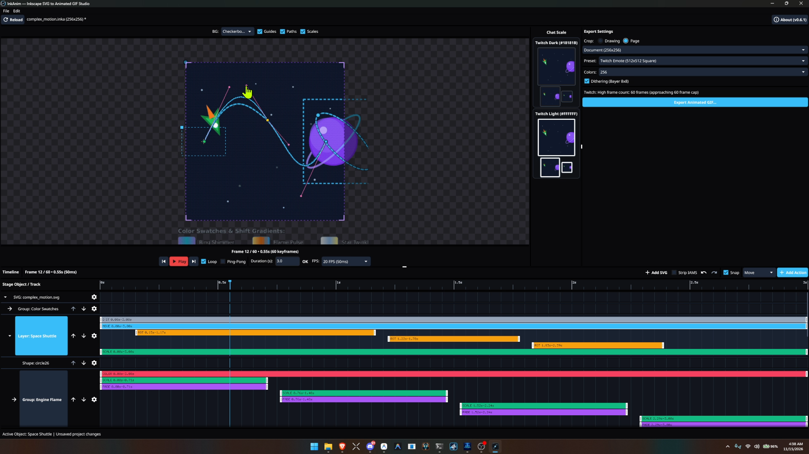

✨ Overview & Concept
InkAnim keeps your vector artwork clean in Inkscape and stores all animation data separately in a human-readable .inka project file. You never have to duplicate artboards or clutter your SVG layer labels with hand-typed commands.
InkAnim never modifies your source .svg files on disk. Whenever you save updates to your artwork in Inkscape (Ctrl+S), InkAnim automatically detects the change and reloads the updated vector geometry onto your existing animation timeline.
🗂️ The .inka Project Workflow
A .inka file is a lightweight JSON project manifest placed in the same folder as your SVG artwork:
- Create or Open a Project: Use File → New Project or File → Open Project... (Ctrl+O) to open an existing
.inkafile (or drag-and-drop an.svg/.inkainto the Studio window). - Link One or More SVGs: Use Add / Import SVG... to link one or multiple co-located Inkscape SVGs into the same project.
- 1:1 Layer & Group Hierarchy: InkAnim mirrors your Inkscape layers and groups directly in the timeline panel so you can target any element without renaming it.

⏱️ Seconds-First Timeline & Actions
InkAnim’s timeline lets you scrub in seconds (with optional frame readouts), adjust total Duration (s) and FPS freely, and stack multiple simultaneous actions on any layer or group:
| Action Type | What It Animates | Key Options |
|---|---|---|
| Move | Translates an object along a straight line or cubic Bézier spline path. | Easing, Reverse, Ping-Pong, Tangent Orient (orient_path) |
| Rot | Rotates an object clockwise or counter-clockwise around its pivot. | Angle (degrees), Direction (CW/CCW), Pivot, Easing, Repeat |
| Scale | Scales an object uniformly or independently on X and Y axes. | scale_from_x/y, scale_to_x/y, Pivot, Easing, Ping-Pong |
| Fade | Interpolates object opacity over time. | opacity_from, opacity_to, Easing |
| Color | Shifts fill/stroke colors across gradient stops or sweeps a linear highlight. | Target (fill, stroke, all), Angle, Repeat, Ping-Pong |
| Depth | Shifts Z-index stacking order during a time window for 2.5D orbits. | Signed integer depth_offset (e.g. -1 or +1) |
| Camera | Pans the global viewport across the scene with multi-plane parallax. | Spline path, Easing, Reverse |
🎯 Interactive On-Canvas Gizmos
Rather than guessing coordinates, you can author motion directly on the Studio canvas:
- Stage Placement: Drag an object's initial stage offset directly on the canvas.
- Custom Pivot Crosshair: Drag the rotation/scale pivot handle to any point, or snap it to bounding-box edges or a named SVG element ID (such as
#pivot_mount). - Bézier Motion Splines: Drag
Moveendpoints and bend trajectories into smooth cubic Bézier curves using theCtrl1andCtrl2tangent handles. - 15° Angle Snapping: Hold Ctrl while dragging motion path endpoints or waypoints to snap cleanly to 15-degree increments.
📈 Easing & Looping
Every timeline action supports built-in easing curves and looping modes:
| Curve / Mode | Behavior |
|---|---|
| linear | Constant speed throughout. Ideal for continuous spinning or steady loops. |
| in | Slow start, rapid acceleration. Great for launches or exits. |
| out | Fast start, smooth deceleration to a stop. Ideal for slide-ins and landings. |
| in-out | Smooth S-curve acceleration and deceleration for natural organic motion. |
| Ping-Pong | Oscillates smoothly forward and backward without duplicating turnaround frames. |
🌟 Live Example: Star Swirl
Download the star_swirl.zip project bundle (containing star_swirl.inka and star_swirl.svg), unzip it, and open star_swirl.inka in InkAnim Desktop Studio:
Star Swirl (Twitch Emote Ready)
Clean vector star artwork in star_swirl.svg paired with a spiral Move spline action in star_swirl.inka. Scrub the timeline, inspect Twitch chat scales, and export in one click.

🎬 Previewing & Exporting in InkAnim
Once your timeline actions are dialed in, InkAnim makes verifying and exporting effortless:
1. In-Studio Playback & Twitch Scale Inspector
- Playback Controls: Use Space or click Play/Pause to preview in real time, and scrub the timeline ruler to inspect any timestamp.
- Twitch Chat Inspector: Preview your animation simultaneously at actual Twitch chat dimensions (112×112, 56×56, and 28×28 pixels) on both dark (
#18181B) and light (#FFFFFF) backgrounds.
2. 1-Click GIF Export
- Auto-Square Padding: Centers your artwork on a 1:1 square canvas with transparent padding, fulfilling Twitch emote submission rules without stretching.
- Color Quantization & Dithering: Select palette depth (2 to 256 colors) and toggle Bayer 8×8 dithering for smooth gradients.
- Size Validator: Automatically verifies that the output GIF complies with Twitch's 1.0 MB file size limit.
🔄 Migrating Legacy IAMS SVGs
If you have older SVGs containing embedded IAMS labels (such as Move {f:1-20}, Rot {angle:360}, or Movement {...}), simply open the .svg in InkAnim Studio. InkAnim automatically migrates those directives into .inka timeline actions and gives you the option to keep or strip the legacy labels and guide paths from your source SVG.